TL;DR
Motivation
The ECG leads the heartbeat, by a delay that differs between people
The ECG records the electrical wave that triggers each contraction, and the mechanical response follows with a delay that differs between leads and between people.
In the UK Biobank, end-systole (ES, the frame of smallest heart volume) varies by 91 ms (SD) across 8,093 validation subjects, and the hearts with the earliest and latest ES differ in inter-lead ECG delay in 41 of 66 lead pairs, most strongly at V2 and V3.
PhysCtrl, a standard motion diffusion model with a generic ECG encoder, compresses this spread by a quarter and gives every subject a near-average heartbeat, which is the failure Time2Track targets.
lower: Cohen's d
upper: p01
Lead pair
ECG of the selected lead pair
Loading…
The hand: sEMG timing and joint timing (emg2pose)
The same holds for the hand: staggered joints come with staggered sEMG
For surface EMG and hand pose (emg2pose), the 16 forearm channels switch on at different times, and they do so more when the joints of the movement start at different times, which is the timing a decoder must carry from the sEMG to the hand.
lower: Cohen's d
upper: p01
Channel pair
sEMG of the selected channel pair
Loading…
Contributions
What Time2Track adds
Delay tokenization on learned wavelets
Time2Track measures each lead's sub-sample lag against lead II at three learned wavelet scales with FFT cross-correlation and a soft-argmax, and gates the resulting delay tokens into the conditioning set.
ECG-conditioned 4D motion diffusion
To our knowledge, it is the first generator that conditions 4D cardiac mesh motion on multichannel ECG, through cross-attention in a spatio-temporal Transformer that starts from the subject's rest mesh.
A benchmark that measures collapse
On 40,577 ECG and mesh pairs, seven encoders share one diffusion backbone and are scored on diversity (APCR, APDR) and amplitude (PAR) as well as point-wise error, because predicting the mean can look accurate.
Method
Two token streams from one wavelet decomposition
A learnable wavelet front end, initialized from PhysioWave, feeds a morphology branch and a delay branch whose tokens condition a diffusion model that denoises 388 control points over 50 frames.
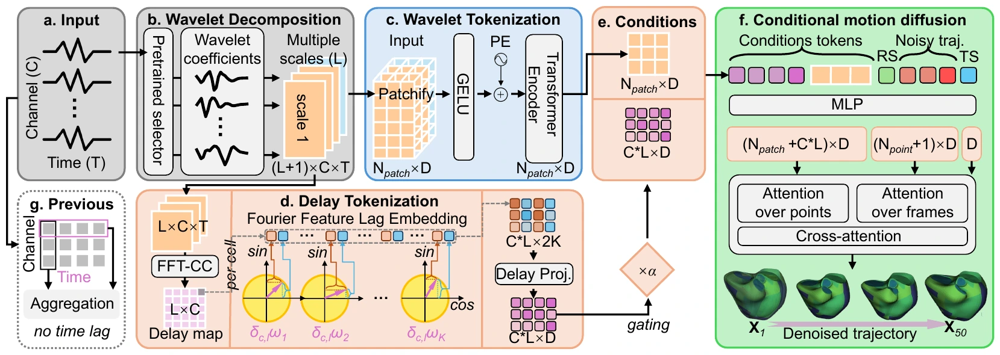
Measuring the lag
For lead c and wavelet scale ℓ, the lag is the soft-argmax of the normalized cross-correlation with lead II within ±τmax:
τ̂c(ℓ) = Σ|τ| ≤ τmax τ · softmaxτ ( βℓ Rc(ℓ)[τ] ), R = 𝓕−1( 𝓕Wc ⊙ conj(𝓕Wr) ) / ‖Wc‖ ‖Wr‖
The delay δc(ℓ) = τ̂c(ℓ) − τ̂r(ℓ) is shift-invariant and differentiable, and the gate α starts at 0 so training begins from the morphology-only encoder.
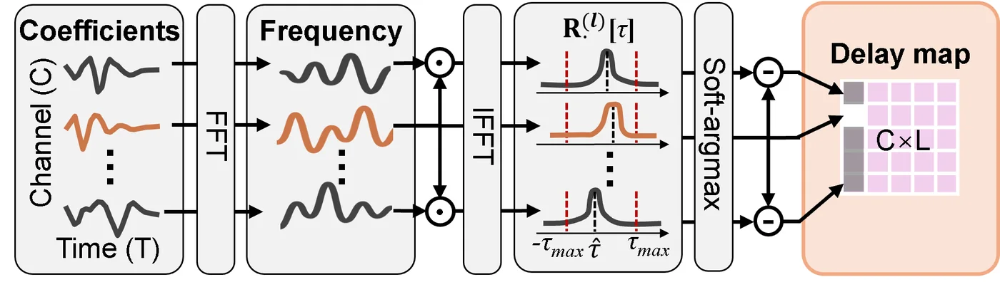
Metrics
Five metrics for amplitude and inter-subject diversity
PAR: are local peaks the right size?
A cubic in time is fitted to the trajectory of each point and removed. The cubic carries the slow systolic and diastolic sweep, so the residual keeps the faster local peaks. PAR divides the peak-to-peak range of the predicted residual by the true range, pooled over subjects and averaged over the 388 points and three axes. A value of 1 means local peaks of the true size, and a value below 1 means damped motion.
PAR = meanv Σi pp(Pred̂i,v) / Σi pp(GT̂i,v), pp = max − min over frames
APD and APDR: do hearts differ by the right amount?
APD compares every pair of subjects by the RMS distance dij between their detrended whole-heart trajectories and divides the mean distance by the mean RMS amplitude of the same group. Owing to this division, APD measures spread relative to motion size. A model that shrinks every heart by one common factor keeps its APD, and APD falls only when the predicted hearts become alike. APDR is the predicted APD over the true APD, so a value below 1 marks a collapse toward one common motion.
APD = meani<j RMS(Xi − Xj) / meani RMS(Xi), APDR = APDPred / APDGT
Ground truth
dij / mean RMS
dij / mean RMS
dij / mean RMS
APC and APCR: do hearts differ in timing?
For each subject, the Gram matrix G = XX⊤ of the detrended trajectory holds the inner product of the whole-heart displacement at every pair of frames, a 49 × 49 timing fingerprint. The RV coefficient scores the agreement of two fingerprints after normalising their size (1 for identical timing structure), and APC is its mean over all pairs. APCR is the predicted APC over the true APC, so a value above 1 means the predicted hearts share one timing pattern more than real hearts do.
RVij = ⟨Gi, Gj⟩ / ‖Gi‖ ‖Gj‖, APC = meani<j RVij, APCR = APCPred / APCGT
Ground truth
RVij
RVij
RVij
Results
Diversity is preserved, at a cost in point-wise error
Whole-heart vertex trajectories (Table 1)
RV and RMSE score the global trajectory, PAR the detrended amplitude, and APCR and APDR the inter-subject diversity (1 = true), with the ± of the diversity columns being the SD over 10,000 paired subject bootstrap resamples.
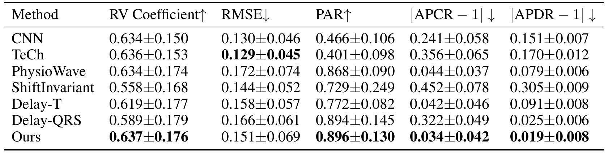
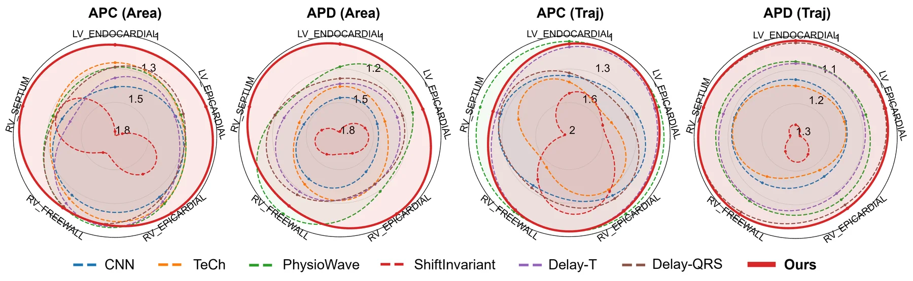
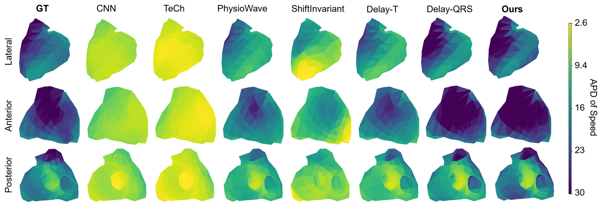
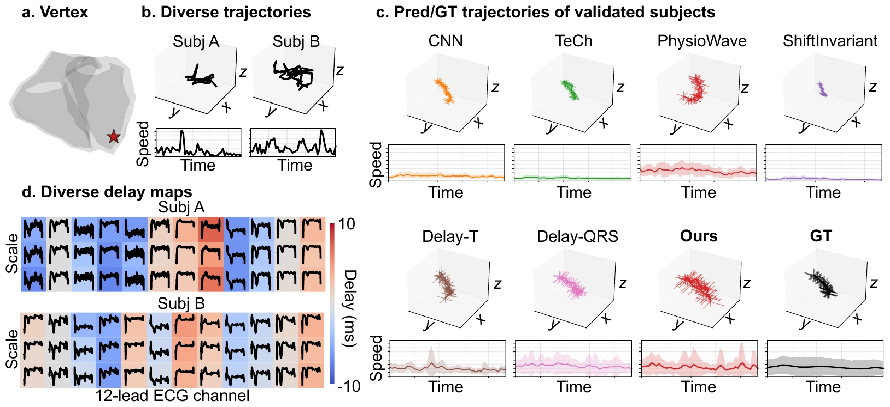
Analyses
Pathology, ECG-only use, emg2pose, and ablations
These analyses appear in the camera-ready paper (Section 4 and Appendix A.3, A.6 and A.7), with the tables typeset as in the paper.
Subjects with cardiac disease
Change from an equal number of randomly sampled healthy subjects to the 981 validation subjects with a cardiac ICD-10 code (Δ = diseased minus healthy, lower is better, best of each column in bold). Time2Track has the smallest RMSE change and the only decrease of |APCR−1|, which rises by 0.034 for CNN and by 0.064 for TeCh, while its |PAR−1| and |APDR−1| change by less than 0.01.
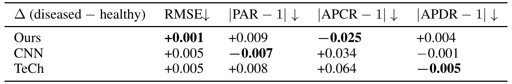
Downstream application with ECG as the only input
Without cardiac imaging at inference, Time2Track generates the 4D heart from the resting ECG alone by replacing the subject's rest mesh p0 with the population average, without retraining. Fidelity drops (RV −0.046, RMSE +0.031), while the diversity stays close to the truth (|APCR−1| 0.052, |APDR−1| 0.036).
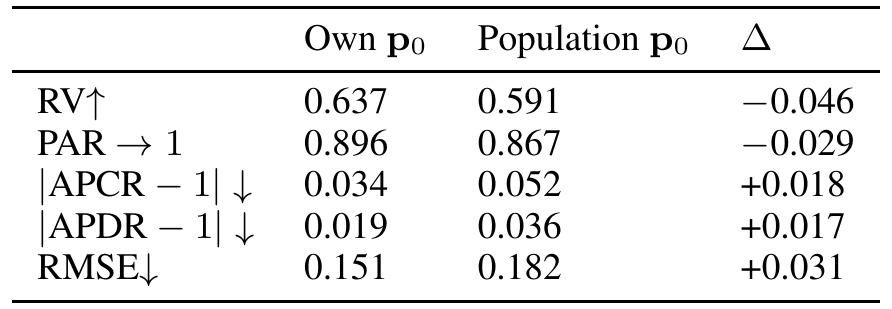
Application to emg2pose
Adding delay tokens to two sEMG decoders of hand pose on the held-out test split of emg2pose lowers |PAR−1| of EMGFormer in every subset and |APCR−1| of both decoders in four of the five subsets, while RMSE and |APDR−1| change by less than 0.01 (three training seeds per model).
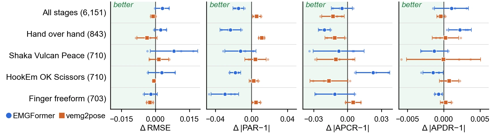
Ablation studies
Ablation study #1: components of Time2Track
With the diffusion backbone and the schedule fixed, removing the delay branch lowers APDR from 0.981 to 0.826, replacing FFT-CC by fixed T or QRS delays or a raw scalar lag and replacing the Fourier-feature lag embedding move APCR and APDR away from 1, and patch lengths of 4, 8 or 16 collapse amplitude and diversity (PAR ≤ 0.726, APCR ≥ 2.275).
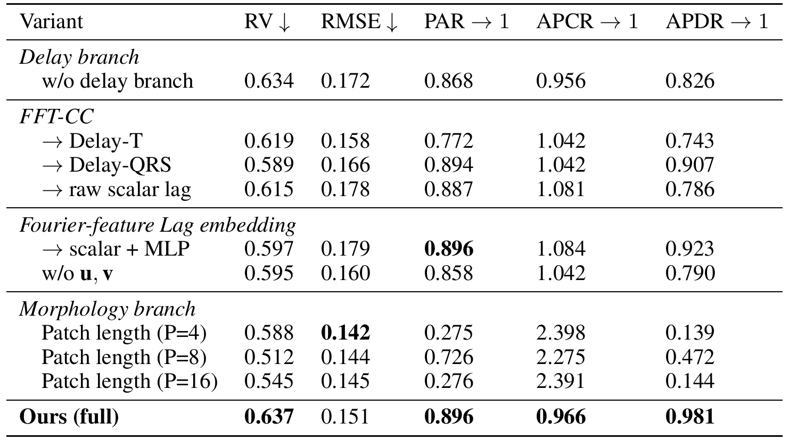
Ablation study #2: electrode noise and missing leads
On the diseased subgroup, noise down to 5 dB SNR costs at most 3% fidelity with unchanged diversity, and dropping the reference lead II leaves fidelity intact but raises |APCR−1|.
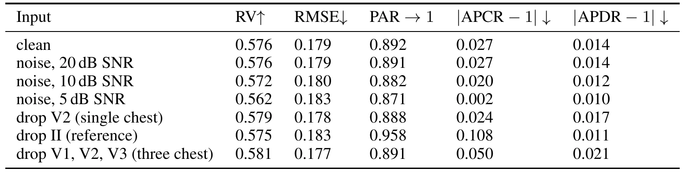
Ablation study #3: lag window τmax
Changing τmax at inference across a 4× range moves no metric outside its bootstrap interval (95% intervals for RV and RMSE, default in bold).
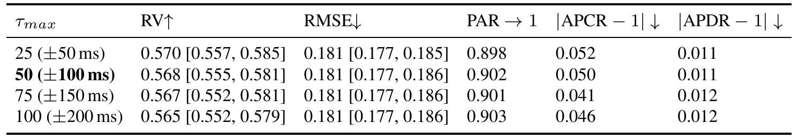
Ablation study #4: reference lead
Retraining Time2Track with aVR or aVL instead of lead II as the reference degrades the performance. The first row repeats Table 1.
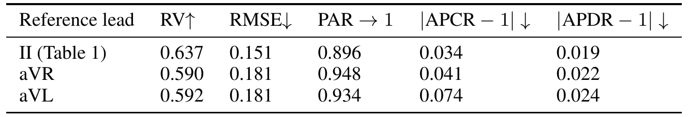